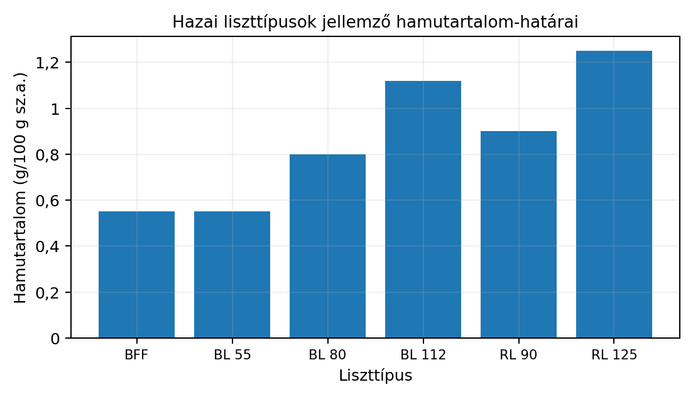

Hajnali fél négy van. A pék átveszi a lisztszállítmányt, és a zsákokon különböző jelöléseket lát: BL 55, BL 80, BFF, TBL, RL 90. A fehér kiflihez nem mindegy, melyiket méri be. Ha rossz lisztet választ, a termék színe, térfogata, héja és íze is hibás lehet. A lisztfajták, liszttípusok és jelölésük ismerete ezért a receptúra és a technológiai lap első, mindennap használt alapja.
A hazai lisztjelölésben a liszttípus neve egy betűkódból és gyakran egy számból áll. A szám a liszt hamutartalmának felső határát mutatja. Minél nagyobb a szám, annál több korpa és ásványi anyag került a lisztbe, ezért a liszt sötétebb, és általában jobban köti a vizet.

Az ábra a leggyakoribb hazai búza- és rozsliszt-típusok jellemző hamutartalom-határait mutatja. A BL 55 és a BFF a legvilágosabb, a BL 112 és az RL 125 már sötétebb, teljesebb őrlemény. A teljes kiőrlésű lisztekre nem adnak ilyen számot, mert a teljes magot tartalmazzák.
Definíció. Hamutartalom alatt a liszt izzítása után visszamaradó ásványi anyag tömegét értjük. A hamutartalmat a liszt szárazanyag-tartalmára vonatkoztatva, tömegszázalékban adják meg.
Definíció. Liszttípus a liszt hamutartalom szerinti besorolása. A típusjelben a betű a gabonafajtát vagy a liszt jellegét mutatja, a szám pedig a hamutartalom felső határát.
Összefüggés. A hamutartalom számítása:
ahol az izzítás után visszamaradó ásványi anyag tömege, pedig a víz eltávolítása utáni liszt tömege. Például ha 100 g száraz lisztből 0,55 g hamu marad vissza, a hamutartalom 0,55 m/m%. A részletes mérési eljárást a Hamutartalom, savfok és sótartalom alfejezetben tanuljuk meg.
A jelölésben a betűk jelentése a hazai gyakorlatban:
A pontos rövidítéseket és a határértékeket a Magyar Élelmiszerkönyv rögzíti (ellenőrizendő: aktuális előírásszám és határértékek). A szám a hamutartalom felső határát jelenti, például a BL 55 hamutartalma legfeljebb 0,55 g/100 g száraz liszt, a BL 80-é legfeljebb 0,80 g/100 g száraz liszt. A gyakorlatban a tényleges hamutartalom ennél alacsonyabb is lehet, de a felső határt nem lépheti át.
Megjegyzés. A hamutartalom nem a liszt színét méri közvetlenül, hanem az ásványi anyag mennyiségét. Mégis szoros kapcsolatban van a színnel, mert a korpában és az aleuronrétegben több ásványi anyag van, mint a belső, fehér endospermiumban. Ezért a magasabb hamutartalmú liszt sötétebb.
A színkülönbséget a gyakorlatban a Pekár-próbával hasonlítják össze: a lisztmintákat egy deszkán egymás mellé simítják, lenyomják, majd vízbe mártják és megszárítják, mert nedvesítés után a korpa- és héjrészek sötétebb színe jobban kirajzolódik. Az alábbi ábra hat liszttípust mutat így (1–6), alattuk a fejezet szerinti hamutartalom-határral.
A próba csak összehasonlításra jó: a szín a búzafajtától, az őrléstől és a megvilágítástól is függ, ezért a liszttípust a laboratóriumban mért hamutartalom dönti el, nem a szín. A nyomtatott ábra szürkefokozatokkal dolgozik; a HTML-kiadás színes változatán a csíkra mutatva a típus jellemző felhasználása is megjelenik.
A hazai búzaliszt-típusok közül a leggyakoribbak:
Figyelem. A BFF nem azonos a BL 55-tel. A BFF rétesliszt jellegű, erősebb sikérű liszt. Ha egy recept BFF-et ír elő, BL 55-tel helyettesíteni csak akkor lehet, ha a technológiai lap ezt megengedi, mert a gyengébb sikér befolyásolhatja a tészta nyújthatóságát és a késztermék szerkezetét. A megnevezések és határok az Élelmiszerkönyv szerint ellenőrizendők.
A rozsliszt jelölése RL betűvel kezdődik. A rozs más fehérje-összetételű, mint a búza: a rozsfehérjék nem alkotnak olyan erős sikérvázat, ezért a rozslisztből készült tészta más technológiát igényel, többnyire kovászolást. A leggyakoribb rozsliszt-típusok:
Megjegyzés. A rozslisztnél a hamutartalom-határok is a szárazanyagra vonatkoznak, de a rozsliszt hamuja kissé más összetételű, mint a búzaliszté. A rozsliszt és a búzaliszt keverésénél a keverék hamutartalma a két liszt arányától függ; ezt a Keverési számítások alfejezetben tanuljuk.
A hazai jelölés mellett más országokban más típusszámokat használnak. A pék akkor találkozik velük, ha külföldi receptet, lisztajánlást vagy importlisztet lát. A leggyakoribbak:
Figyelem. A külföldi típusszámok csak tájékoztató összevetésre valók. A hazai lisztjelölést a Magyar Élelmiszerkönyv határozza meg, ezért a gyártmánylapon és a receptúrában mindig a hazai jelölést kell használni. A külföldi receptben szereplő „bread flour”, „all-purpose flour”, „high-gluten flour” megnevezések nem hazai liszttípusok; a „bread flour” erős, magas fehérjetartalmú lisztet jelent, ami nem azonos a BL 80-nal.
A liszt fő összetevői: víz, szénhidrát (főként keményítő), fehérje, zsír, rost és hamu. A liszttípusok kémiai összetétele eltér, mert a mag különböző részei más-más arányban kerülnek a lisztbe.
| Összetevő | BL 55 | BL 80 | BL 112 | TBL | RL 90 | RL 125 |
|---|---|---|---|---|---|---|
| Víz (m/m%) | 13–14 | 13–14 | 13–14 | 13–14 | 13–14 | 13–14 |
| Fehérje (m/m%) | 9–12 | 10–13 | 11–13 | 11–14 | 6–9 | 7–10 |
| Keményítő (m/m%) | 70–74 | 68–72 | 65–70 | 55–65 | 65–70 | 60–68 |
| Nyersrost (m/m%, régi módszer) | 0,3–0,5 | 0,5–1,0 | 1,0–1,5 | 2,5–4,0 | 0,5–1,2 | 1,0–2,0 |
| Élelmi rost (m/m%) | 2–3 | 3–4 | 4–6 | 10–12 | 6–8 | 8–11 |
| Hamu (m/m%, sz.a.) | 0,35–0,55 | 0,55–0,80 | 0,80–1,12 | 1,6–2,0 | 0,70–0,90 | 0,90–1,25 |
| Zsír (m/m%) | 1,0–1,5 | 1,2–1,8 | 1,5–2,0 | 2,0–3,0 | 1,0–1,5 | 1,2–1,8 |
A táblázat értékei tanulási példák, lisztenként és évjáratonként változnak (ellenőrizendő: aktuális laboreredmény, Élelmiszerkönyv). A nyersrost a rost csak egy részét mutatja; a tápérték-jelölésnél az élelmi rost (a gabonaszem alfejezet értékeivel egyező nagyságrend) számít (ellenőrizendő: tápanyagtáblázat). A teljes kiőrlésű liszteknél a fehérjetartalom magasabb lehet, de a korpa és a csíra miatt a fehérje nem hasznosul úgy, mint a fehér lisztben. A rozsliszt fehérjetartalma alacsonyabb, és a rozsfehérjék nem képeznek erős sikérvázat, ezért a rozslisztből készült tészta ragadósabb, és kovászolást igényel.
A liszttípus kiválasztása a termék jellegétől, a technológiai laptól és a rendelkezésre álló liszt minőségétől függ. Általános irányelvek:
Szabály. A liszt kiválasztásánál első a gyártmánylap és a technológiai lap előírása. A liszttípus csak az egyik jellemző; a liszt sütőipari értékét a sikértartalom, az esésszám, a vízfelvevő képesség és a próbasütés együtt mutatja meg. Ezeket A liszt technológiai tulajdonságai alfejezetben tanuljuk.
Továbbvitt eredmény. A lisztjelölés és a liszttípus-választás itt tanult logikáját használjuk a technológiák és anyagnormák olvasásakor, az A liszt technológiai tulajdonságai alfejezetben, amikor a liszt sütőipari értékét vizsgáljuk, és a Hamutartalom, savfok és sótartalom alfejezetben, amikor a hamutartalmat mérjük.
Előírás. A Magyar Élelmiszerkönyv a búza- és rozslisztekre, valamint a sütőipari termékekre vonatkozó előírásokban rögzíti a liszttípusok jelölését és a hamutartalom szerinti követelményeket. A hamutartalmat szabványos módszerrel, izzítással határozzák meg; a módszer szabványjele jellemzően MSZ EN ISO 2171 (ellenőrizendő: aktuális kiadás). A liszt jelölésének emellett meg kell felelnie az 1169/2011/EU rendelet fogyasztói tájékoztatási szabályainak is, különösen a „teljes kiőrlésű” megnevezés használatakor (ellenőrizendő: aktuális előírások és feltételek). A határértékek és a megnevezések pontos szövege a hatályos Élelmiszerkönyvben és a NÉBIH útmutatóiban található.
Egy kis pékségben új betanított dolgozó vette át a lisztszállítmányt. A zsákokon a rendelt BL 80 helyett BL 112 felirat szerepelt. A dolgozó nem szólt, mert azt gondolta, hogy „kenyérliszt mindegy”. A fehér kiflik aznap szürkés héjúak, tömör bélzetűek lettek, és a vevők panaszkodtak. A hiba oka az volt, hogy a BL 112 több korpát tartalmaz, ami gyengíti a sikérhálózatot, sötétebb színt ad, és rontja a kifli térfogatát. A helyes gyakorlat: a lisztátvételkor a zsák jelölését mindig egyeztetni kell a rendeléssel és a gyártmánylappal. Ha eltérés van, a lisztet félre kell tenni, és a műszakvezetőt értesíteni.
A liszt átvételekor a liszttípus ellenőrzése a zsák vagy a kísérő dokumentum jelölésének leolvasásával kezdődik. A gyakorlatban érdemes megnézni:
A hamutartalom mérését laboratóriumban végzik; a pékségben általában a gyártói specifikáció és a próbasütés adja a döntő információt. A liszttípus jelölése és a tényleges minőség nem mindig azonos, ezért a gyártmánylap nem csak a típust, hanem a liszt sütőipari jellemzőit is rögzíti.
1. hiba: BFF és BL 55 összekeverése. A pék a BFF helyett BL 55-öt használ rétes- vagy vékonyra nyújtott tésztához, mert „mindkettő fehér liszt”. Tünet: a tészta kevésbé nyújtható, könnyebben szakad, a termék kevésbé ropogós. Ok: a BL 55 sikértartalma és sikérminősége eltérhet, ami rontja a tészta nyújthatóságát. Megelőzés: a technológiai lap szerinti lisztet kell használni, és a zsák jelölését ellenőrizni.
2. hiba: a hamutartalom félreértelmezése. A tanuló azt hiszi, hogy a magasabb hamutartalmú liszt „rosszabb”. Tünet: feleslegesen lecseréli a BL 112-t BL 80-ra egy félbarna kenyérnél, így a termék túl világos és jellegtelen lesz. Ok: nem érti, hogy a hamutartalom a termék jellegéhez szükséges. Megelőzés: a liszttípus kiválasztásánál a termék elvárt színét, ízét és rosttartalmát kell figyelembe venni.
3. hiba: külföldi típusszám hazai jelölésként való használata. A pék egy német receptben látja, hogy „Type 550”, és a hazai BL 55-öt használja. Ez nagyjából megfelel, de ha „Type 405”-öt ír a recept, BL 55-tel helyettesíteni már kockázatos, mert a BL 55 hamutartalma magasabb. Tünet: a sütemény sötétebb, tömörebb lesz. Megelőzés: külföldi típusszámot csak tájékoztató összevetésre használjunk, és a hazai típus kiválasztását a gyártmánylaphoz igazítsuk.
1. feladat (A)
Sorold fel a hazai búzaliszt-típusokat a hamutartalom növekvő
sorrendjében, és írd melléjük a hamutartalom-határukat.
2. feladat (A)
Egy technológiai lap BL 80-at ír elő. Milyen termékhez illik ez a liszt?
Indokold!
3. feladat (B)
Egy külföldi recept 1,000 kg Type 405-ös lisztet ír elő. Melyik hazai
liszttel helyettesítenéd, és miért kell óvatosnak lenni?
4. feladat (B)
Számold ki, hogy 250 g BL 55 lisztben legfeljebb hány gramm hamu lehet,
ha a hamutartalom felső határa 0,55 m/m% a szárazanyagra vonatkoztatva.
Tételezd fel, hogy a liszt víztartalma 14 m/m%, így a
szárazanyag-tartalom 86 m/m%.
5. feladat (C)
Miért nem elég a hamutartalom alapján eldönteni, hogy egy liszt
alkalmas-e kenyérsütésre? Milyen további vizsgálatokat ismersz?
6. feladat (D)
Egy pékségben a teljes kiőrlésű kenyér receptje BL 112-t ír elő, de a
dolgozó TBL-t használ. Milyen eltéréseket tapasztalhat a tésztánál és a
készterméknél? Mi lenne a helyes eljárás?
Önellenőrzés – válaszok
1. feladat megoldása
A búzaliszt-típusok a hamutartalom növekvő sorrendjében: BL 55 (≤0,55
m/m%; a BFF hamutartalma hasonló, ellenőrizendő), BL 80 (≤0,80 m/m%), BL
112 (≤1,12 m/m%), TBL (teljes kiőrlésű, magas hamu, jellemzően 1,6–2,0
m/m%).
2. feladat megoldása
A BL 80 fehér kenyérliszt, enyhén krémszínű, kissé több korpával. Fehér
kenyérhez és vizes péksüteményhez (zsemle, kifli) illik; rozsliszttel
keverve rozsos kenyérhez is. A kissé magasabb hamutartalom teltebb ízt
és krémszínű bélzetet ad.
3. feladat megoldása
A Type 405 alacsony hamutartalmú német finomliszt; a hazai típusok közül
a BL 55 áll hozzá legközelebb. Ha a recept ezt írja elő, BL 55-öt
válasszunk. Óvatosnak kell lenni, mert a két liszt sikértartalma,
vízfelvevő képessége és esésszáma eltérhet, ezért az első próbasütés
előtt a gyártói adatlapot és a tészta viselkedését is ellenőrizni
kell.
4. feladat megoldása
Adott:
,
víztartalom 14 m/m%, hamutartalom-határ 0,55 m/m% sz.a.
Keresett:
.
A szárazanyag-tartalom:
A hamu tömegének felső határa:
Kerekítve: legfeljebb kb. 1,18 g hamu lehet. Ez tanulási példa; a tényleges érték alacsonyabb is lehet. ∎
5. feladat megoldása
A hamutartalom csak az ásványianyag-tartalmat mutatja, a liszt sütőipari
értékét nem. A kenyérsütéshez fontos a sikér mennyisége és minősége, a
vízfelvevő képesség, a keményítő tulajdonságai, az esésszám (az
alfa-amiláz aktivitás), a próbasütéssel mért térfogat és a tészta
stabilitása. Ezért a liszttípus mellett mindig a gyártói specifikációt
és a próbasütést is figyelembe kell venni.
6. feladat megoldása
A TBL teljes kiőrlésű liszt, a BL 112-nél sokkal több korpát, csírát és
rostot tartalmaz. A tészta ragadósabb, kevésbé rugalmas, több vizet
vehet fel, de a sikérhálózat gyengébb. A késztermék sötétebb, tömörebb,
kisebb térfogatú, erősebb, teljesebb ízű lesz. Ha a gyártmánylap BL
112-t ír elő, akkor BL 112-t kell használni; TBL-lel való helyettesítés
csak akkor megengedett, ha a technológiai lap ezt kifejezetten előírja,
és a vízfelvételt, a dagasztást és a kelesztést is módosítják.
A hazai lisztjelölés betűkódból és a hamutartalom felső határát mutató számból áll. A búzalisztnél a BL 55 (búzafinomliszt), a BL 80 (fehér kenyérliszt), a BL 112 (félbarna kenyérliszt) és a teljes kiőrlésű TBL a jellemző; a BFF rétesliszt jellegű liszt (a megnevezések és határok az Élelmiszerkönyv szerint ellenőrizendők). A rozslisztnél az RL 90, RL 125 és a teljes kiőrlésű TRL a jellemző. A hamutartalom a liszt izzítása után visszamaradó ásványi anyag tömegszázaléka a szárazanyagra vonatkoztatva. Minél magasabb a típusszám, annál több korpa és ásványi anyag van a lisztben, ezért sötétebb és rostosabb. A liszttípust a termék jellegéhez kell választani: fehér kenyérhez BL 80, kalácshoz és finom pékáruhoz BL 55, félbarna kenyérhez BL 112, teljes kiőrlésűhöz TBL/TRL. A külföldi típusszámok csak tájékoztató összevetésre valók. A lisztjelölést a Magyar Élelmiszerkönyv szabályozza, a hamutartalmat szabványos izzításos módszerrel mérik. Ezt a tudást használjuk az A liszt technológiai tulajdonságai és a Hamutartalom, savfok és sótartalom alfejezetben.